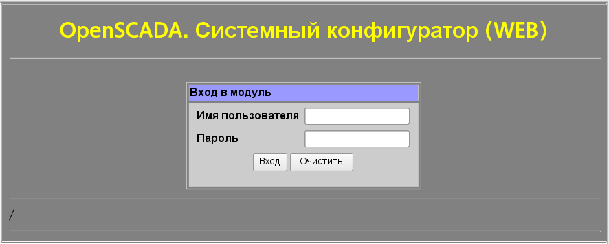
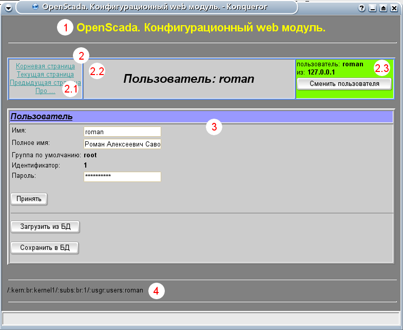
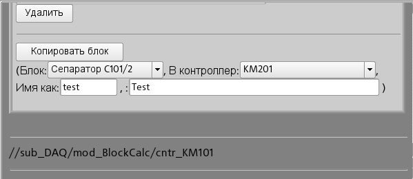

Предоставляет основанный на Web конфигуратор системы OpenSCADA.
Лицензия:
GPL
Введение
Модуль WebCfg предоставляет конфигуратор системы OpenSCADA.
Конфигуратор реализован на основе Web технологий.
Для работы конфигуратора достаточно обычного WEB-браузера.
Работоспособность модуля <WebCfg> тестировалась в связке
с модулями <Transport::Sockets>
и <Protocol::HTTP> на следующих Web-браузерах:
Mozilla;
Firefox;
Konqueror;
Opera;
IE.
Модуль построен на основе языка интерфейса управления системой
OpenSCADA, а значит предоставляет единый интерфейс конфигурации.
Обновление модуля может потребоваться только в случае обновления
спецификации языка интерфейса управления.
Кроме принадлежности модуля системе OpenSCADA, он также
принадлежит (является модулем) модуля транспортного протокола
<HTTP>. Собственно, вызов WebCfg производиться из HTTP.
Вызов производится посредством расширенного механизма коммуникации
через экспортированные в модуле WebCfg функции: HttpGet
и HttpSet.
Интерфейс модуля реализован на языке XHTML 1.0 Transitional с вкраплениями JavaScript.
Работа с модулем начинается с открытия сеанса пользователя,
для этого модуль требует аутентификации (рис.1). Для работы
аутентификации и механизма сохранения сеанса, браузер должен
разрешать Cookies.

Рис.1. Аутентификация пользователя.

Рис.2. Структура рабочего окна пользователя.
После аутентификации пользователь попадает в рабочее окно (рис.2), которое состоит из следующих частей:
1.Верхний колонтитул. Содержит наименование модуля.
2.Панель управления. Состоит из:
2.1.Навигатор. Выполняет функции навигации по дереву страниц.
2.2.Наименование узла.
2.3.Пользователь системы. Отображает пользователя текущего сеанса, его адрес и позволяет изменить пользователя.
3.Рабочее поле. Содержит конфигурационный контент языка интерфейса
управления начиная с корневых вкладок и заканчивая конечными
элементами управления.
4.Нижний колонтитул. Содержит адрес текущей страницы.
Адресация страниц начинается с элемента второго уровня URL.
Это связанно с тем, что элемент первого уровня
используется для идентификации модуля пользовательского
Web-интерфейса. Например URL:
<http://localhost.localdomain:10002/WebCfg//Functions> можно
расшифровать как вызов страницы первого уровня “Functions”
Web модуля <WebCfg> на хосте localhost.localdomain
через порт 10002.
Элементы управления делятся на базовые, команды, списки, таблицы
и изображения. Все четыре типа отображаются отдельными
блоками в не зависимости от их расположения в описании.
1 Базовые элементы
В число базовых элементов входят: информационные элементы, поля
ввода значений, элементы выбора из списка, флаги.
Для установки новых значений базовых элементов используется
групповой метод, для этого на форме существует кнопка
“Принять”. В случае отсутствия имени элемента, базовый элемент
стыкуется к предыдущему базовому элементу. Пример группа базовых
элементов со стыковкой приведён на рис.3.
Рис.3. Базовые элементы и их стыковка.
2 Команды
Команды это элементы для передачи определённых действий узлу
и организации ссылок на страницы. Команды могут содержать
параметры. Параметры формируются из базовых элементов. Пример
команды с параметрами приведен на рис.4.

Рис.4. Команда.
3 Списки
Списки содержат группу базовых элементов одного типа. Для операций
над элементами списка добавляются дополнительные кнопки. Кроме
того, через элементы списка выполняются операции перехода
на другие страницы. Для перехода добавляется кнопка
“Перейти”. Списки могут быть индексированными. Пример списка
с переходом приведен на рис.5.
Рис.5. Список.
4 Таблицы
Таблицы содержат значения базовых элементов. Тип базового элемента
определяется отдельно для каждой колонки. Пример таблицы приведен.
на рис.6.
Рис.6. Таблица.
5 Изображения
Изображения призваны передавать графическую информацию в конфигураторы. Пример таблицы приведен на рис. 7.
")
")
")